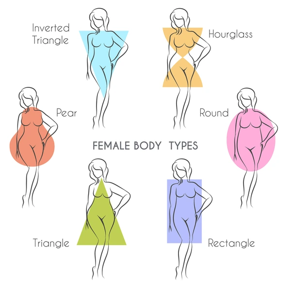
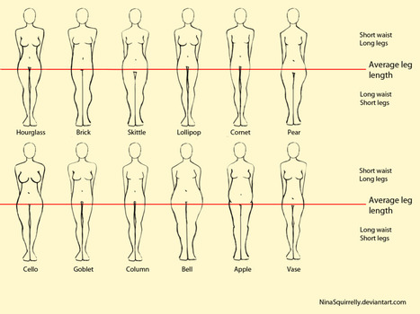
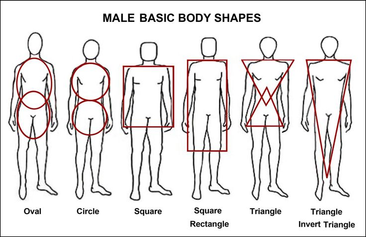
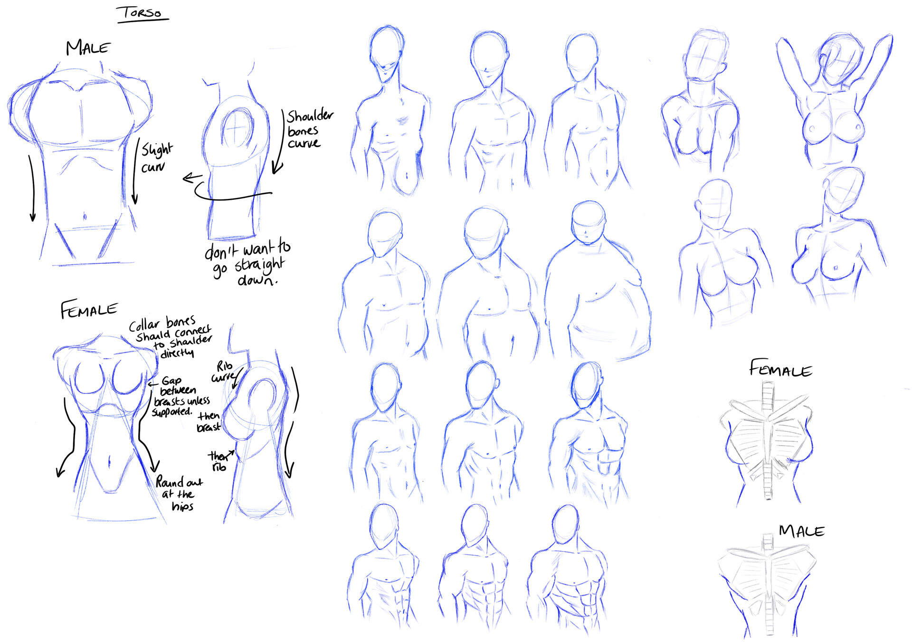

Art Tutorial 3
Date: 2024-7-11 12:00:00
Welcome back!
This lesson will be short since we'll be finishing making our body. Different body shapes exist, depending on what you want to make. I'll show off a few pictures, and you'll decide what you want to make for your drawing.
   Something to note is that you have to start the curve early at the top, and make sure the body ends by the hips properly. Similar to the face example, everything can be done with math, and you can line everything perfectly. I'll start with the main body for now.

Because I'm drawing a female, I have to make sure to leave some room around the top/middle of the body for the breast, you can see the line is about where it'll end, leaving room for the stomach on the space below. Now we'll clean up our arms/legs.

It all started from basic shapes, and now we got our figure done! We're gonna work on clothes next time you're here, so be sure to have a full pose picture ready for that.